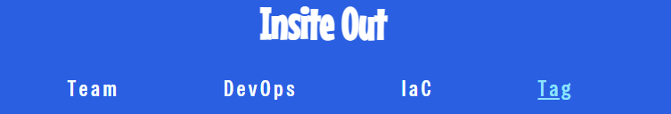
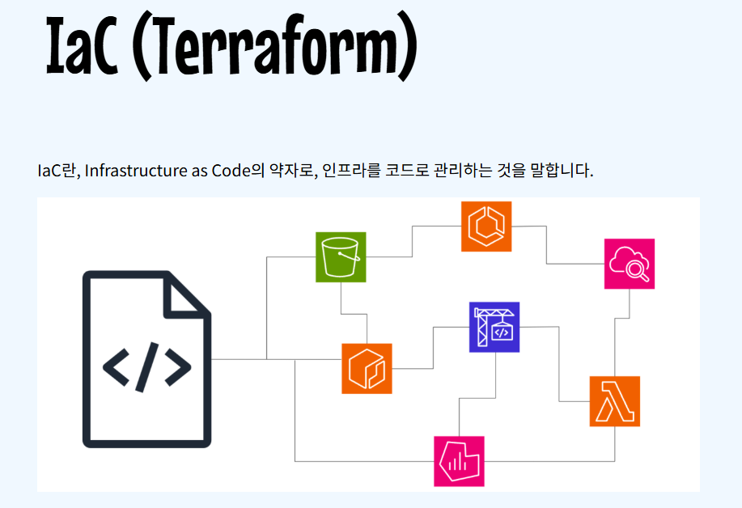
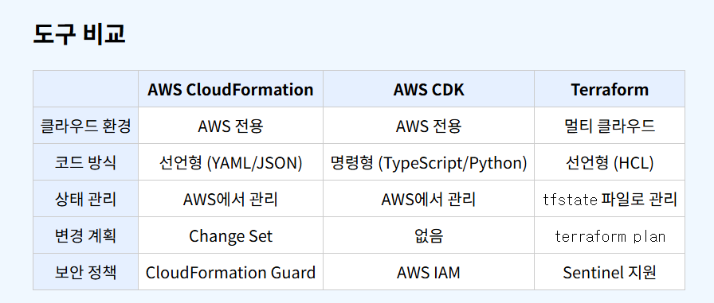
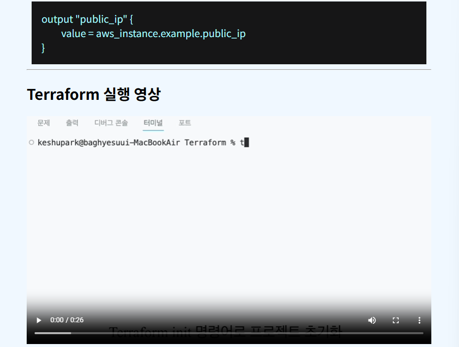
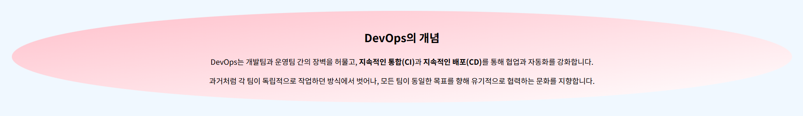
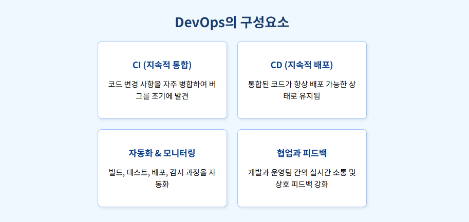
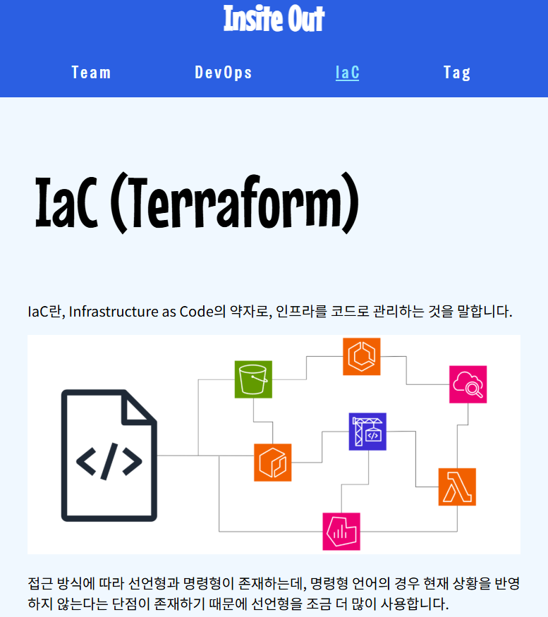

Tag
HTML 태그

[ 상단 메뉴 ]
nav : 메뉴 영역을 나타냄
div : 여러 소스를 묶는 용도
ul : 순서 없는 리스트
li : 리스트 항목
a href="" : 하이퍼링크 (다른 페이지나 주소로 이동)

[ 본문 ]
section : 콘텐츠 영역을 나타냄
h1 : 제목(숫자가 작을수록 큰 제목)
p : 텍스트
br : 줄바꿈
img : 이미지 삽입

[ Table 태그 ]
thead : 표의 머리글 부분
tbody : 표의 본문 내용
tr : 표의 줄(행)
th : 표의 제목 셀
td : 일반 셀

[ 그 외 태그 ]
dl : 정의 목록 전체
dt : 이름이나 제목
dd : 설명
hr : 수평선
video : 동영상 삽입
CSS 태그
[ 상단 메뉴 ]
font-family : 글꼴 설정
font-size : 글자 크기 지정
text-decoration : 밑줄 등 텍스트 꾸밈
color : 글자 색상
justify-content : 내부 요소들을 가로 방향으로 정렬

[ 소개글 부분 ]
text-align : 텍스트 정렬
line-height : 줄 간격 정렬
background : 배경 색 또는 이미지 지정
border-radius : 모서리 둥글게 만들기

[ DevOps 구성 요소 ]
border : 테두리 설정 (두께, 색, 종류 등)
box-shadow : 그림자 효과
padding : 요소 내부 여백
margin : 요소 바깥쪽 여백
min-height : 최소 높이 지정
width : 너비 지정

[ 미디어 쿼리 ]
@media screen and (min-width: 0px) and (max-width: 600px)
: 화면 너비가 0~600px 사이일 때만 적용
@media screen and (min-width: 600px) and (max-width: 1000px)
: 화면 너비가 600~1000px 사이일 때만 적용